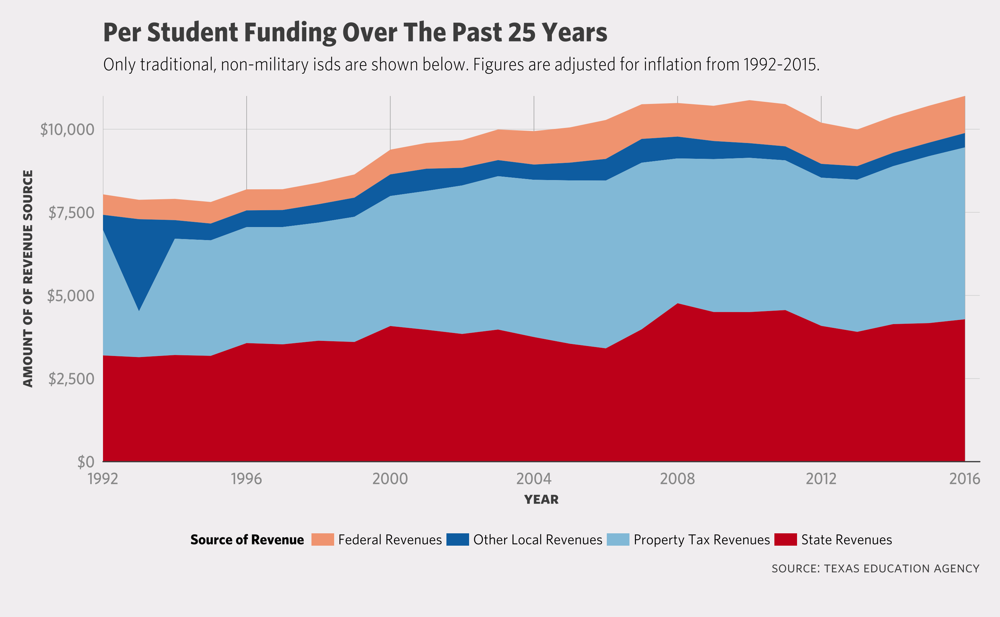

After almost 10 hours waiting to testify before the Texas Commission on Public School Finance, I took full advantage of the three minutes I had to tell them about the dramatic rise of school poverty, reduced state funding to public education, the lack of transparency in equity funding that hardly ends up where it should go, and the need to put updated funding weights for the cost of education and special populations on a mandated review schedule similar to what the state does with agencies and the sunset commission.
Here is a modified copy of my testimony.
Transcript of My Testimony
My name is Matt Worthington and I am a resident of Austin, TX; parent of two girls; former special education teacher; and a former district technology administrator of DC Public Schools and KIPP Austin Public Schools who holds a Masters in Education and am nearing completion of a second Master’s in Public Affairs from the LBJ School at the University of Texas.
Members of the committee: Texas schools are getting poorer faster than they’re getting bigger. Between 1995 & 2016, the share of students identified as economically disadvantaged in traditional ISDs rose by almost 13%1. In raw numbers, that translates to an 83% increase in the total number of economically disadvantaged students from 1995 to 2016. This is because the increase of poor students is outpacing the overall population growth of students.2
The current body of medical & economic research on child poverty tells us that poverty exposes children to what is called “toxic stress”. This adversity has strong linear relationships with multiple health impairments in adulthood, including heart disease, obesity, cancer, alcoholism, and depression.3 They reduce life expectancies for children. Counter that, one of the more significant explanations for long life-expectancies is local government spending.4
In Texas, school poverty disproportionately effects students of color. In 2014, almost half of the non-white student population in Texas attended high-poverty schools, which generally have greater academic, social, and emotional needs but receive inadequate funding for programming.5
Meanwhile, the state has lowered its share of per-pupil funding on traditional ISDs. Since 2008, the state’s funding has dipped by almost $500 per ADA while local property tax funding has skyrocketed at over $800 per ADA. Multiplied by the respective ADA counts of students in 2016, this shift constitutes an increased burden of roughly $4.3 billion for statewide local property tax funding and a decreased responsibility of roughly $2.5 billion for funding from the state.6

While recapture was designed to provide equity, it has been undermined by the state’s supplanting of revenues that it claims to supplement. Detailed records of recapture revenues show an over 800% increase in annual collections since 1994, but the state maintains no accounting method that tracks exactly7 where recapture money goes, by district. In other words, the public cannot see where the money ends up.
Increasingly, poor districts are running out of ways to get more revenue. Nearly 56% of property poor districts have maxed out on their M&O rates compared to only 14% of property wealthy districts.8 This means poor districts are increasingly reliant on the hope for more funding from recapture. However, this hope is fragile because most property wealthy districts tax on M&O within their range of golden pennies, which is not subject to recapture.9 This is because many property wealthy districts do not trust the state as a fiduciary of recapture revenues.
If we fail to ensure that all 5.3 million children in Texas attend schools that are adequately and transparently funded, we risk a future where Texas is characterized by its lack moral, economic, or cultural wealth. That will happen if we fail to ensure that money intended for poor children actually makes its way to those classrooms where they are learning against all odds. If that means we, as Texas taxpayers, must pay more money than so be it. The lives of 5.3 million children and future generations of Texans literally depend upon it.
Thank you.
- Data: Texas Education Agency - Annual Snapshot School District Profiles, 1995 & 2016. [return]
- I use the phrase “poor children” or “in poverty” here in reference to students who are economically disadvantaged. While some are quick to note that the Federal Poverty Guidelines are not the same thing as economically disadvantaged (which follows guidelines from the National School Lunch & Breakfast Programs), it’s worth noting that the Federal Poverty Guideline is often criticized for being a very low measure of poverty in 2018. For a family of four, the 2018 Federal Poverty Guideline is $25,100. This figure is before taxes, which would further reduce the take home pay. The numbers used to determine economically disadvantaged are either 130% (the free-lunch population) or 180% (the reduced-lunch population) of the Federal Poverty Guideline, which are far lower than the 200% measure used by many poverty research institutions like Spotlight on Poverty & Opportunity: The Source for News, Ideas and Action. [return]
- Shonkoff, J. P. (2016). Capitalizing on Advances in Science to Reduce the Health Consequences of Early Childhood Adversity. JAMA Pediatrics, 170(10), 1003. https://doi.org/10.1001/jamapediatrics.2016.1559 [return]
- Chetty, R., Stepner, M., Abraham, S., Lin, S., Scuderi, B., Turner, N., … Cutler, D. (2016). The Association Between Income and Life Expectancy in the United States, 2001-2014. JAMA, 315(16), 1750. https://doi.org/10.1001/jama.2016.4226 [return]
- Source: The National Equity Atlas; Data: the National Center for Education Statistics (NCES) Common Core of Data (CCD) Public Elementary/Secondary School Universe Survey. [return]
- Data: Texas Education Agency - PEIMS District Financial Actual Reports; accessed via a public information request. [return]
- In an interview with Folo Media this past summer, the office of State Funding for the Texas Education Agency verified that their current method of finance does not allow them to keep track of how much schools receive in recapture funds. [return]
- Data: Texas Education Agency - State Aid Template 2017-18 and 2018-19 Biennium; accessed online. [return]
- Data: Texas Education Agency - State Aid Template 2017-18 and 2018-19 Biennium; accessed online. [return]